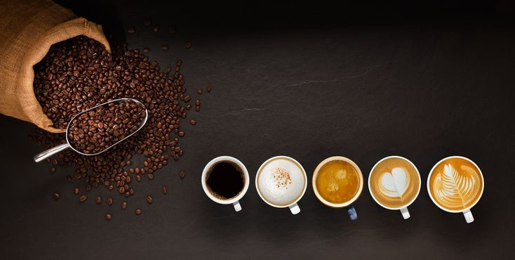

Cerita Usaha
Tentang Kopi Gunung Lumping
Kopi Gunung Lumping adalah UMKM fiktif yang mengolah kopi lokal untuk kebutuhan pembelajaran.

Nilai yang kami bawa
- Bahan lokal dari petani sekitar.
- Proses sederhana dan transparan.
- Pelayanan ramah untuk pelanggan harian.